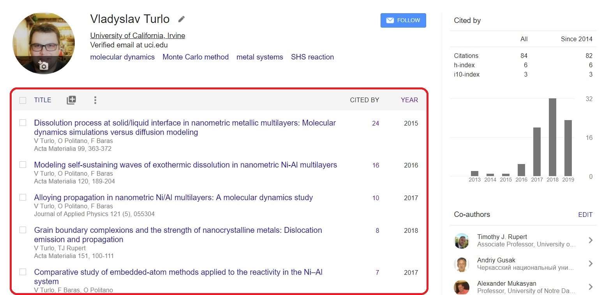

Pulling the tables out of a Google Scholar profile into the pandas DataFrames using requests and BeautifulSoup4
Posted on Tue 28 May 2019 in Python
Motivation¶
Around half a year ago, one of my projects required to retrieve some data about my publications from my Google Scholar profile. At that moment, I managed to do it by using the scholarly Python module, which allows retrieving author and publication information from Google Scholar in a friendly, Pythonic way. However, Google recently started constantly changing the names of attributes inside many HTML tags, making such modules completely useless (you can read more about such issue here). Thus, I started looking for a more stable solution that is not involving the HTML attributes to retrieve the information I needed. I developed my own code using the BeautifulSoup4 module and wanted to share the way I did it here in the case someone finds it useful.
Exploring a Google Sholar profile¶
First, I explore my Google Scholar profile to determine the elements of the page that consist of the information I need such as my publications and number of citations. After I access my profile using this link: https://scholar.google.com/citations?user=Jid5DjYAAAAJ&hl=en, I can see that such information organized as a table (see the red frame below). 
Also, as you may notice, there is another table in the top right corner with the total number of citations and different metrics, such as h-index and i10-index. This data may be also useful and also stored as a table, so we will put the focus on extracting tables from this specific page, while the final code will be useful to parse any Google Scholar profile.
Let's code!¶
This is my favorite part. First, let's get the source code of the HTML page above using the awesome requests module. As it is mentioned by the authors of this module:
Requests is the only Non-GMO HTTP library for Python, safe for human consumption. Requests allow you to send organic, grass-fed HTTP/1.1 requests, without the need for manual labor.
# import the module
import requests
# request the page with the Google Scholar profile
requests.get("https://scholar.google.com/citations?user=Jid5DjYAAAAJ&hl=en")
Such a response means that the page was successfully retrieved. Let's save the response into the variable and look at what is inside:
# request the page with the Google Scholar profile
r = requests.get("https://scholar.google.com/citations?user=Jid5DjYAAAAJ&hl=en")
# show the response as the text (the first 1000 symbols):
r.text[:1000]
As you can see, the response has the raw HTML code that basically tells how to organize all the information at the webpage. Thus, we need some parser to extract the information we are interested in without a real burden. And the solution here, as you may expect from the title of this post, is the BeautifulSoup4 module. As its developers fairly mentioned in the description:
Beautiful Soup is a Python library for pulling data out of HTML and XML files. It works with your favorite parser to provide idiomatic ways of navigating, searching and modifying the parse tree. It commonly saves programmers hours or days of work.
So, let's go ahead and make the soup:
# import the module
from bs4 import BeautifulSoup
# parse the text from our request
soup = BeautifulSoup(r.text, "html.parser")
type(soup)
Now, we can extract elements of the webpage in a very simple way. For example, let's get a title of the page:
soup.title
If we need just the text without HTML tags, we simply do:
soup.title.text
After that, we can easily get the scholar's name just by spliting the string above:
scholar_name = soup.title.text.split(" - ")[0]
print(scholar_name)
From analyzing the original webpage, we remember that the information we need is stored in tables. So, let's find all the tables in our soup. The BeautifulSoup4 module allows us to do this with just one line of code:
# find all the tables
tables = soup.find_all("table")
# print the number of tables found
print(len(tables))
As we expected, we have just two tables at the page. Let's look at the first one:
print(tables[0])
Looks quite messy, but thanks to the developers, we have some easy way to make it prettier:
print(tables[0].prettify())
From the HTML syntax, we can see that the table have the head (<thead> tag) with a row (<tr> tag) of column names (<th> tags). Also, the table has the body (<tbody> tag) with rows (<tr> tags) and columns (<td> tags). Using our soup, let's first extract the array of column names for this table, making the loop over the elements of the row in a table head:
# make a list of column names
column_names = [name.text for name in tables[0].thead.tr]
print(column_names)
To extract the column names, we can also use the same method findAll() we used before to find the tables in our soup:
# make a list of column names
column_names = [name.text for name in tables[0].findAll('th')]
print(column_names)
Let's now extract data from the body of the table:
# extract the data from the body of the table
data = [[column.text for column in row.findAll('td')] for row in tables[0].tbody.findAll('tr')]
print(data)
The one pretty comfortable way to store and work with tables in Python is to use the pandas DataFrames.
pandas is an open source, BSD-licensed library providing high-performance, easy-to-use data structures and data analysis tools for the Python programming language.
Let's import pandas module and transform our HTML table into the DataFrame:
# import module
import pandas as pd
# create a new DataFrame using the column names we extracted above
df1 = pd.DataFrame(columns = column_names)
# add data to the DataFrame row by row
for i,row in enumerate(data):
df1.loc[i] = row
# make the first column as the index column in the DataFrame:
df1 = df1.set_index(column_names[0])
# show the final DataFrame
df1
Looks great! Let's now explore the second table:
# make a list of column names
column_names = [name.text for name in tables[1].findAll('th')]
print("Column names:")
print(column_names)
# extract the data from the body of the table
data = [[column.text for column in row.findAll('td')] for row in tables[1].tbody.findAll('tr')]
print("The first row of the table:")
print(data[0])
Two things we can notice here
- the number of column names is larger than the number of elements in a row of data
- the first element of the row of data is one string composed of publication title, author names, and journal information
This makes the transformation of such HTML tables to the pandas DataFrames a little bit more complicated. Let's make a DataFrame with the following columns:
- Publication title
- Authors' names
- Journal information
- Cited by
- Year
The last two can be easily extracted from the second and third columns of the HTML table. However, to extract the other data, we have to dive deeper into the HTML code of the first column. Let's have a look at the first column of the first row of the body of the table:
print(tables[1].tbody.tr.td.prettify())
As we can see, the title of the publication can be accessed by using the <a> tag, while authors' names and journal information are stored under <div> tags. Let's then define a function that will split each row of the HTML table into the elements using the <a>, <div>, and <td> tags:
# define the function to divide one row of the data on elements
def divide(row):
# get publication title
try:
title = row.findAll('a')[0].text
except:
title = ''
# get authors' names
try:
authors = row.findAll('div')[0].text
except:
authors = ''
# get journal information
try:
journal_info = row.findAll('div')[1].text
except:
journal_info = ''
# get number of citations
try:
cited_by = row.findAll('td')[1].text
except:
cited_by = ''
# get publication year
try:
year = row.findAll('td')[2].text
except:
year = ''
# return all the data as a list
return [title, authors, journal_info, cited_by, year]
# extract the data from the body of the table
data = [divide(row) for row in tables[1].tbody.findAll('tr')]
data[0]
Great! Let's create the list of our custom column names and create the pandas DataFrame using the same code as for the first table:
# make the list of column names
column_names = ["Publication title", "List of authors", "Journal information", "Number of citations", "Year"]
# create a new DataFrame using the column names we extracted above
df2 = pd.DataFrame(columns = column_names)
# add data to the DataFrame row by row
for i,row in enumerate(data):
df2.loc[i] = row
# show the final DataFrame
df2
That's it! Our DataFrame is ready for the analysis and visualization. In the next post, we will explore the ways to advance the data we extracted here by connecting it to external databases. We will extensively work with string transformations, pandas DataFrame manipulations, and data visualizations using matplotlib and seaborn modules.